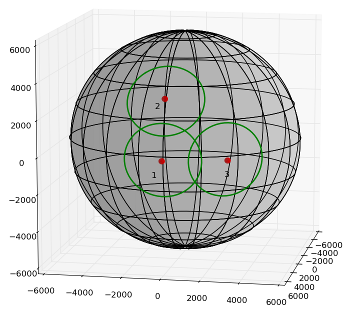

ACM-ICPC World Finals 2012 · Problem J
Commercial flights are statistically quite safe (in terms of number of deaths per passenger-kilometer, only going to the moon is safer). But there are still reasons for precautions and safety regulations. An early such rule was the so-called “60-minute rule,” which required that a two-engine plane must always be within 60 minutes of the nearest adequate airport along its entire flight path. A variety of similar rules have existed, but at their core, they remain the same: the flight path can not take the airplane more than a certain maximum allowed distance from the nearest airport. With these restrictions, planes cannot always use a direct route for flying from one airport to another.
In this problem we will compute the shortest flight path between two airports while adhering to a maximum allowed distance rule. In the figure below, which illustrates the first sample test case, any flight route has to stay within the three circles. Thus a plane going from airport 2 to airport 3 has to detour from the direct route via the region around airport 1. Note that the plane would not necessarily have to go to airport 1 itself.

Things are further complicated by the fact that planes have limited fuel supply, and to go longer distances they may need to make a stopover at intermediate airports. Thus, depending on the fuel capacity, a plane going from airport 2 to airport 3 in the figure might have to stop over at airport 1 (or the fuel capacity might be too low even to go to airport 1, in which case the trip would be impossible to make).
We make the following simplifying assumptions:
The first line of each test case contains two integers N and R, where 2 ≤ N ≤ 25 is the number of airports and 1 ≤ R ≤ 10 000 is the maximum allowed flight distance (in km) from the nearest airport. Each of the next N lines contains two integers φ, θ satisfying 0 ≤ φ < 360 and −90 ≤ θ ≤ 90, the longitude and latitude (respectively) of an airport, in degrees. The airports are numbered according to their order in the input starting from one. No two airports are at the same position.
Following this is a line containing an integer Q, satisfying 1 ≤ Q ≤ 100. Each of the next Q lines contains three integers s, t, c satisfying 1 ≤ s, t ≤ N, s ≠ t, and 1 ≤ c ≤ 50 000, indicating a plane going from airport s to airport t with a fuel capacity yielding a range of c km.
For each test case, display the case number followed by one line for each query containing the length in km of the shortest flight path between airport s and t, subject to the fuel constraint c. Display the length accurate to three decimal places. If there is no permissible path between the two airports, then display the word impossible instead.
You may assume the answer is numerically stable for perturbations of up to 0.1 km of R or c.
3 2000 0 0 0 30 30 0 3 2 3 5000 2 3 4000 2 3 3000 2 10000 45 45 225 -45 2 1 2 50000 2 1 50000
Case 1: 4724.686 6670.648 impossible Case 2: impossible impossible